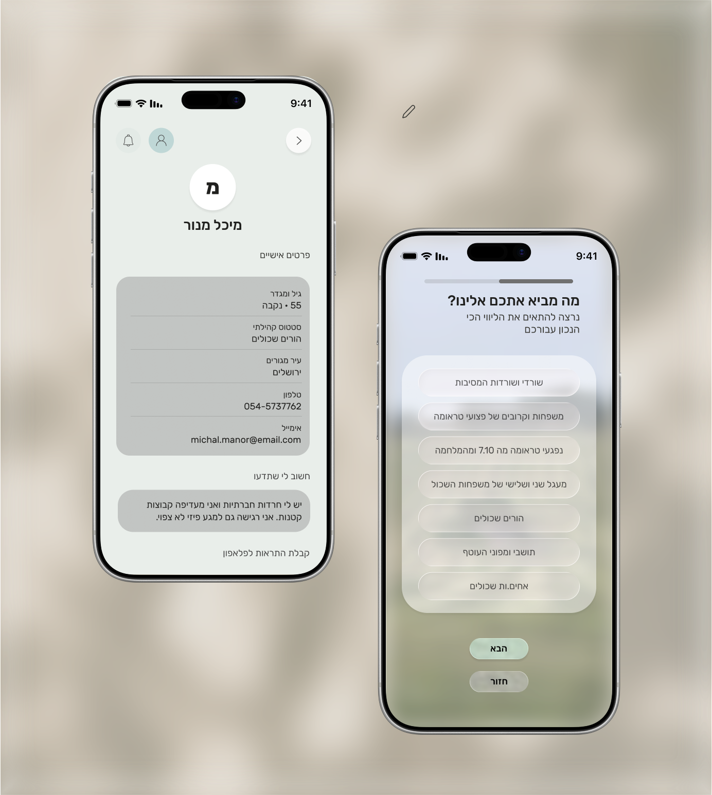

←
In addition, the platform includes a dedicated space for personal expression and support, allowing users to share thoughts, requests, and experiences in a safe and respectful environment. The intention is to create a deeply supportive and individualized space where each member of the community feels seen, heard, and held.
[For the optimal viewing experience, it is recommended to open the prototype in the Figma application, as video playback and certain interactions may be limited or inconsistent when viewed in a web browser.]
Bezalel Academy of Arts and Design